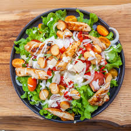
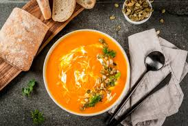

Menu de Délices Gourmands
Découvrez notre sélection de plats savoureux, préparés avec des ingrédients frais et de saison.
Nous vous proposons une variété d'entrées, de plats principaux et de desserts pour satisfaire toutes vos envies.
Nous espérons que vous trouverez votre bonheur parmi notre menu !
Ne manquez pas de goûter à nos plats du jour, préparés avec soin par notre chef.
Feuilles de laitue romaine, croûtons dorés, parmesan et sauce César maison.
Tranches de pain grillé garnies de tomates fraîches, basilic et huile d’olive.
.jpg)
Une soupe chaude préparée quotidiennement avec des ingrédients frais de saison.
Filet de poulet mariné et rôti, servi avec des légumes grillés et une sauce au thym.
.jpg)
Pâtes fraîches accompagnées de saumon fumé et d’une sauce crémeuse à l’aneth.
.jpg)
Riz arborio cuit lentement avec des champignons sauvages et du parmesan fondant.
.jpg)
Pâte sablée garnie d’une crème citronnée et surmontée d’une meringue dorée.
.jpg)
Délicieuse mousse légère au chocolat noir, servie avec copeaux de chocolat.
.jpg)
Crème onctueuse à la vanille avec une fine couche de sucre caramélisé.
.jpg)